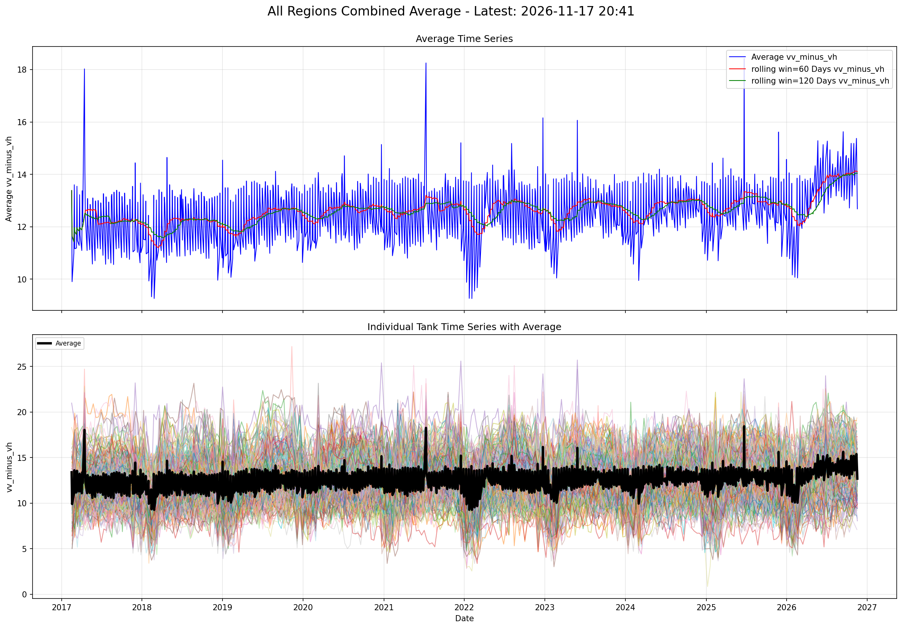
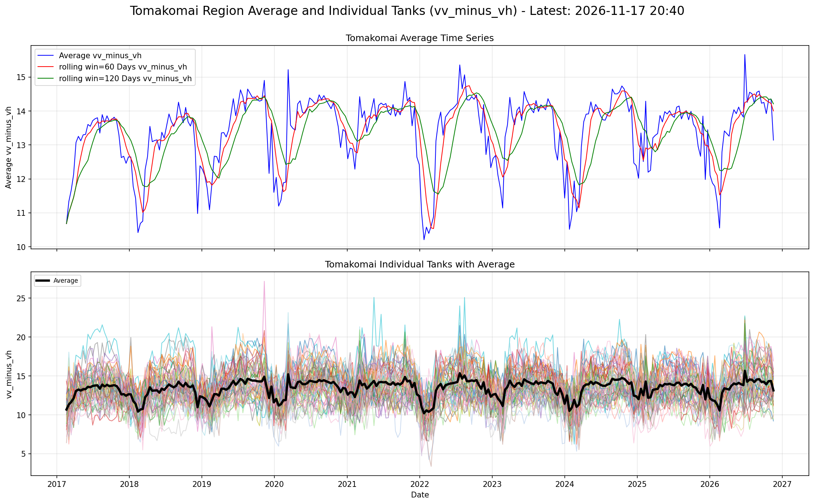
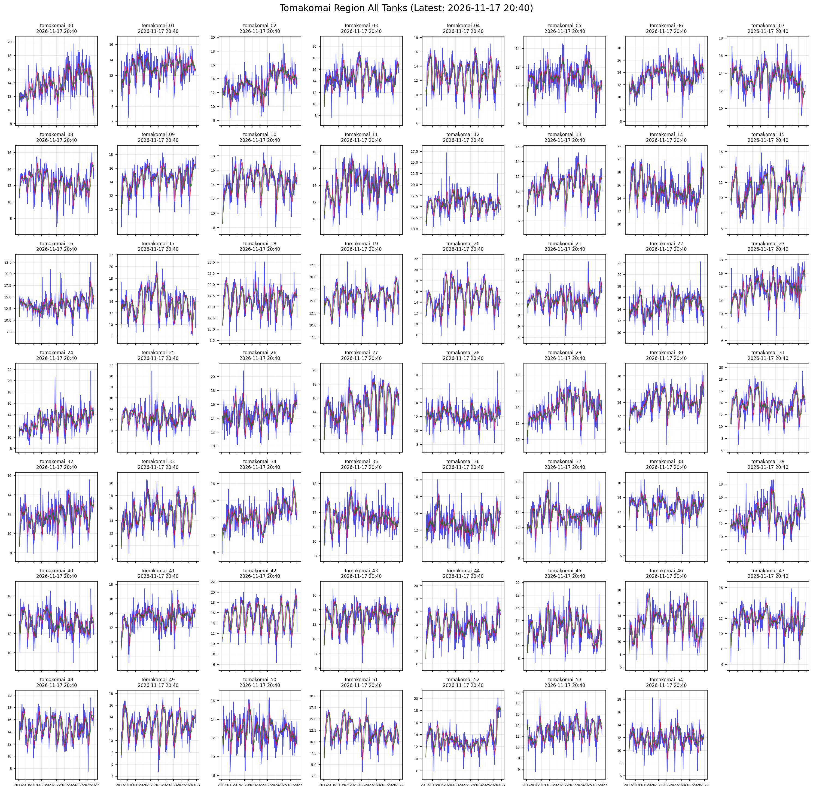
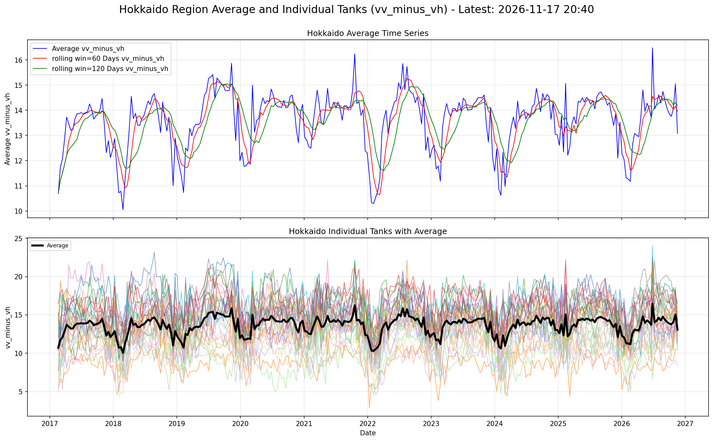
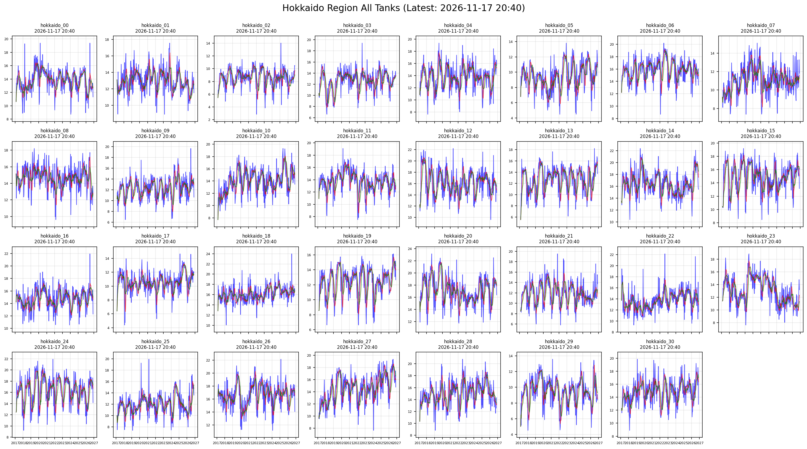
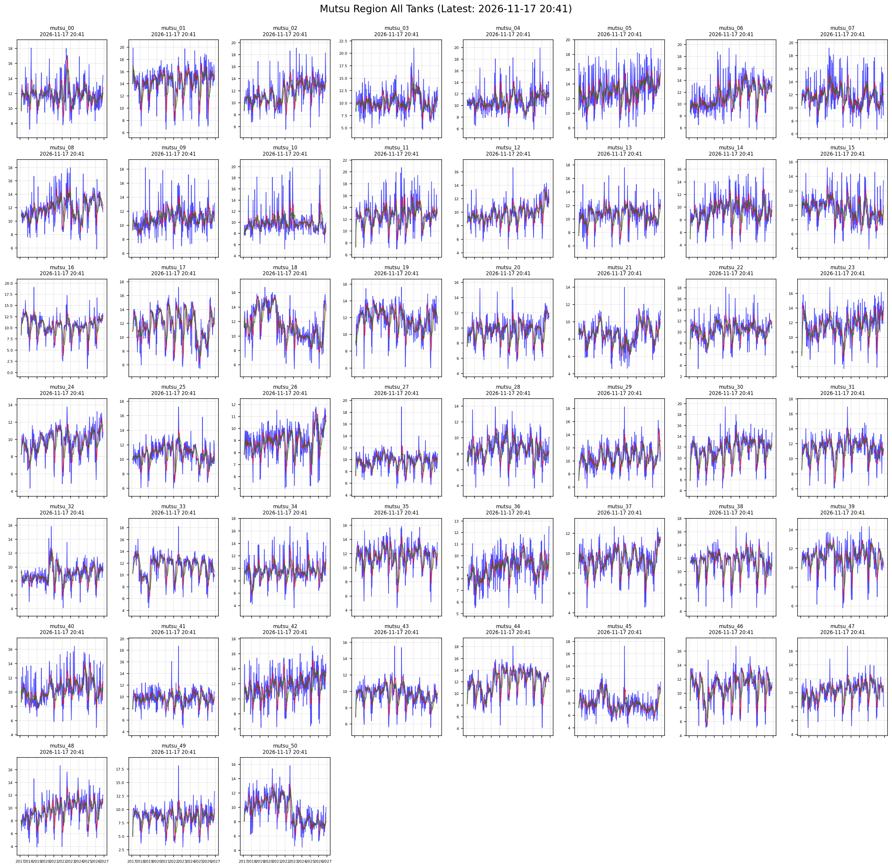
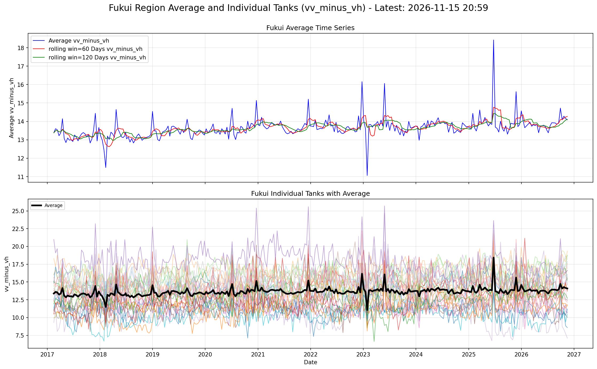
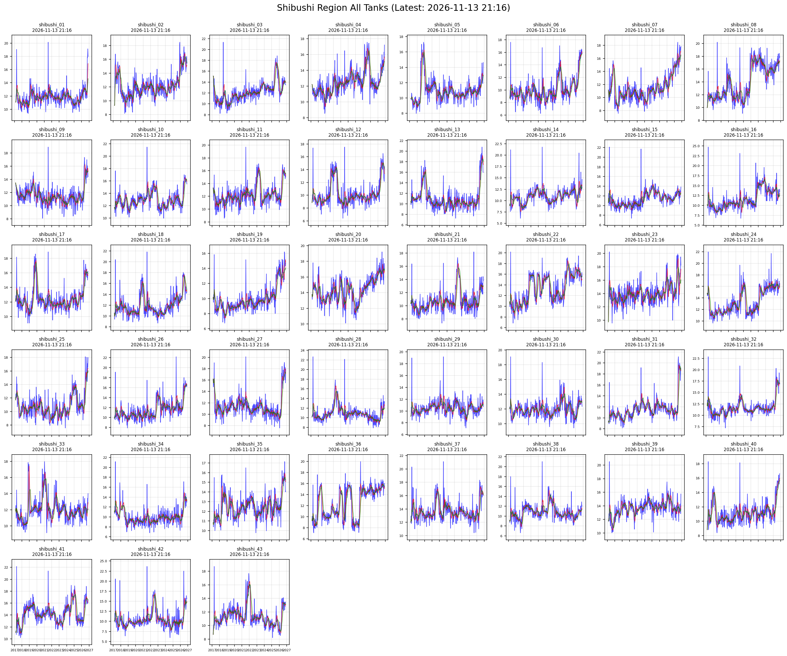

このダッシュボードは、Sentinel-1衛星のSARレーダー波形をリアルタイムに解析し、タンクの液面変化を監視する実験的なプロジェクトです。以下のチャートとAIレポートは、最新の観測データとGoogle検索からの情報を組み合わせて生成されたものです。
OSSプロジェクトのGitHubリポジトリ: https://github.com/rohiniku/s1-tank-monitor
※本レポートは、宇宙からのレーダー波形を自律的に読み解いたAIが、今朝のGoogle検索ニュースとリアルタイムに結合して自動生成した実験用ファクトチェック報告です。
・shibushi基地の直近データ（2026年11月25日）のVV偏波値2.05dBは、過去の平均的なベースラインと比較して著しく高い水準で推移しています。これは、石油タンクの屋根が上昇し、在庫が増加している物理的変化を示唆しています。 ・shibushi基地におけるVV偏波の持続的な高値は、在庫が満タンに近い状態を維持していることを示しており、今後の払い出し動向に注意が必要です。
・志布志基地では、2026年4月中旬から5月下旬にかけてVV偏波が0.54から2.71へと著しく上昇し、在庫が大幅に増加したことを示している。 ・福井基地では、2025年6月22日にVV偏波が9.65、同年11月25日に7.02と、短期間で極めて高いピークを記録し、その後急激に平常値に戻る異常な変動が見られた。 ・志布志基地は2026年3月26日からの国家備蓄放出、5月1日からの第2弾放出の対象と報じられたが、SARデータは4月中旬から5月下旬に在庫が大幅増加しており、報道された放出時期と物理データに矛盾がある。 ・福井基地の2025年の異常な在庫急増を示すSARデータに対し、同時期の同基地に関する具体的な放出や大規模な輸入に関する報道は見当たらず、データ変動の背景が不明である。 ・志布志基地の放出報道と実際の在庫増加の乖離は、放出後の迅速な補充や未公表の大規模輸入・備蓄再編を示唆し、その真の意図と規模を警戒すべきである。 ・福井基地の突発的な在庫急増は、特定の期間の大規模な原油受け入れや一時貯蔵を示唆する。今後の同様の変動が供給ルートや備蓄運用体制の変化を反映する可能性があり、継続監視が必要である。
・志布志基地のVV偏波は2026年11月25日時点で過去2年間の同時期と比較して著しく上昇しており、在庫が大幅に増加していることを示唆しています。他の主要基地は安定した水準を維持しており、全体として安全水域にあります。 ・中東情勢はフーシ派によるサウジ施設攻撃やホルムズ海峡でのタンカー攻撃により緊迫し、原油価格は上昇しています。海峡は「制約付き通航」で通航量が低迷し、陸上在庫も低水準で物理的供給逼迫が懸念されます。 ・ホルムズ海峡における軍事的緊張のエスカレートや航路管理権を巡る衝突の激化は、原油・LNGの供給途絶リスクをさらに高め、日本のエネルギー安全保障に直接的な脅威をもたらすでしょう。
📊 最新の幾何アライメント済・移動平均観測チャート
（※画像上でダブルタップまたはピンチアウトすることで、ブラウザ標準の滑らかなズーム操作が可能です）











